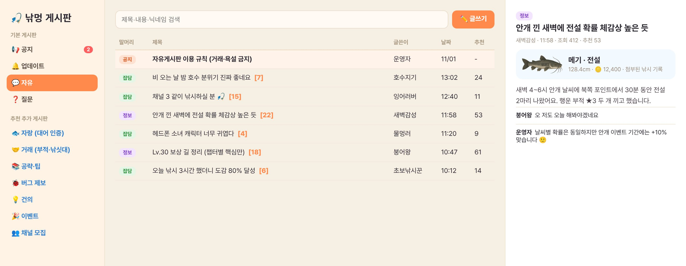

이미지를 누르면 크게 볼 수 있어요 (←/→, ESC). 1번만 게임에 적용됐고, 2~5번은 시안이에요. 시안 2~4는 실제 게임 화면(390×844)에 CSS만 바꿔 찍은 거라 그대로 옮길 수 있어요.
지금(A0)은 자동 버튼이 가방·도감 버튼 사이에 끼어 겹쳐요. 손가락 크기(44px)가 서로 겹치지 않게 다시 배치했어요.
| 시안 | 장점 | 단점 |
|---|---|---|
| A1 낚시 버튼 위 알약 | 낚시와 바로 연결되는 위치, 켜짐 상태가 잘 보임 | 낚시 버튼 위쪽 여백이 줄어듦 |
| A2 왼쪽 위 (채팅 아래) | 오른손 영역이 넓어짐 | 자주 누르기엔 멀어요 |
| A3 조이스틱 위 | 자동 중엔 조이스틱을 안 써서 자연스러움 | 조이스틱을 쓸 때 실수로 눌릴 수 있음 |
| A4 큰 반원 재배치 추천 | 모양은 지금 그대로, 간격만 50px 이상 벌림 | 버튼 묶음이 화면 가운데 쪽으로 조금 올라옴 |
원인: 날씨 캔버스(#wxCv)가 z-index 1로 HUD 전체 위에 그려져서 눈·비·꽃잎이 카드 위로 지나가요. 모두 HUD를 날씨보다 위로 올리는 것(한 줄 수정)부터 시작해요.
| 시안 | 내용 |
|---|---|
| W0 | 지금: 눈송이가 카드 위로 지나감 |
| W1 추천 | HUD를 날씨 위로 (z-index만 바꿈). 성능 부담 0 |
| W2 | W1 + 카드가 떠 있는 동안 날씨를 22%로 흐리게 |
| W3 | 카드를 화면 아래쪽(캐릭터 위)으로 내림 |
| W4 | W1 + 카드 뒤 은은한 어둠 + 날씨 알림 카드 잠깐 숨김 |
| # | 화면 | 문제 | 개선 |
|---|---|---|---|
| 1 | 가방 탭 | 탭 4개가 2줄로 꺾이고 숫자 배지가 아이콘을 덮음 | 한 줄 가로 스크롤 탭 + 오른쪽 끝 흐림 처리(더 있다는 표시), 배지는 아이콘 바깥 오른쪽 위로 |
| 2 | 상점 탭 | 탭 5개가 2줄 (밸런스표만 아래로 떨어짐) | 같은 가로 스크롤 탭 |
| 3 | 설정 탭 | 네 번째 탭이 잘려 보이는데 넘길 수 있다는 표시가 없음 | 가로 스크롤 + 끝 흐림, 글자 13px |
| 4 | 설정 · 닉네임 입력 | 기본 입력창(작고 각진 모양)이라 다른 UI와 어울리지 않음, 확대 줌 발생(16px 미만) | 높이 42px · 둥근 모서리 · 16px 글자 (iOS 자동 확대 방지) |
| 5 | 레벨 챕터 (RD3) | 챕터 탭 10개가 3줄로 쌓여 카드가 아래로 밀림 / 보상 이름이 '…'으로 잘림 | 챕터 탭 한 줄 스크롤, 보상 이름은 2줄까지 줄바꿈 |
| 6 | 모든 창 | 한국어 단어가 중간에서 끊김 (예: '확률로 획 / 득') | word-break: keep-all (단어 단위 줄바꿈) |
개선 CSS: src/wrap-fix.css (모바일 700px 이하에만 적용, 25줄 남짓)

| 추가 게시판 | 왜 필요한가 | 운영 포인트 |
|---|---|---|
| 🐟 자랑 (대어 인증) | 잡은 물고기 기록을 그대로 첨부 → 조작 없는 인증, 재방문 동기 | 주간 인기글 → 공지에 소개 |
| 🤝 거래 | 부적·낚싯대 등급이 생겨 거래 수요가 생김. 자유게시판 도배 방지 | [삽니다]/[팝니다] 말머리, 거래완료 표시 |
| 🐞 버그 제보 | 기기·브라우저 정보를 자동 첨부해 재현이 쉬움 | 처리 상태(접수/확인/수정됨) 표시 |
| 📚 공략·팁 | 질문 게시판의 반복 질문 줄임 | 추천 많은 글은 고정 |
| 💡 건의 | 업데이트 방향 수집 | 운영자 답변 달린 글만 따로 보기 |
| 👥 채널 모집 · 🎉 이벤트 | 같이 낚시할 사람 찾기 / 이벤트 참여 인증 | 이벤트 기간에만 열기 |
추천: B1(모바일 탭 목록) + B3(PC 3단)을 기본으로, 자랑 게시판만 B2 카드형. B4(선착장 나무 게시판)는 공지 3~4개만 보여주는 입구로 쓰면 분위기가 살아요. 실제 운영은 서버(DB·로그인·신고)가 필요해서 지금은 시안만 만들었어요.